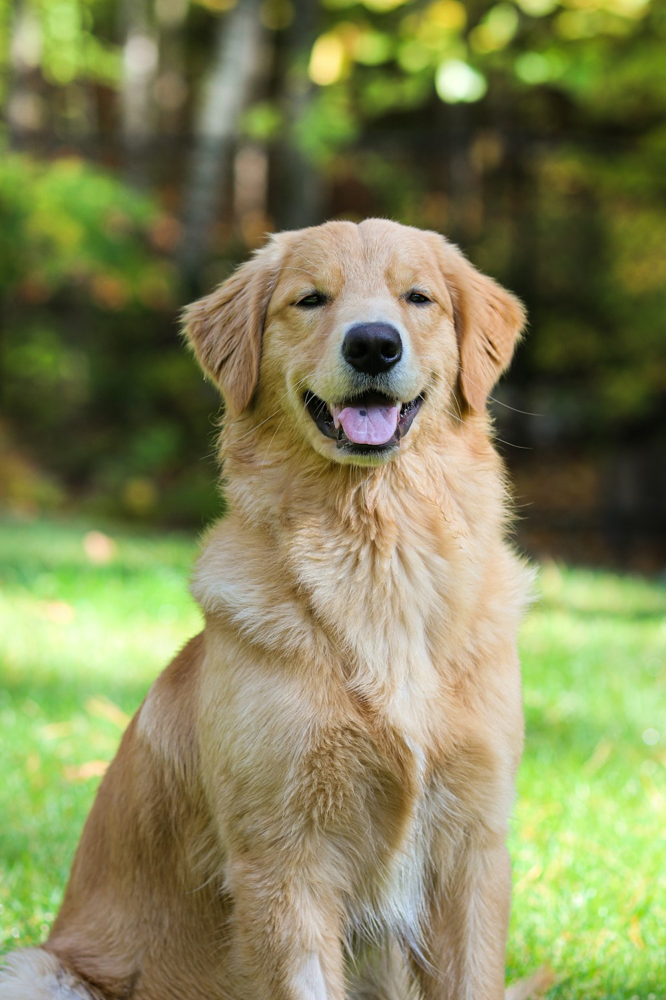
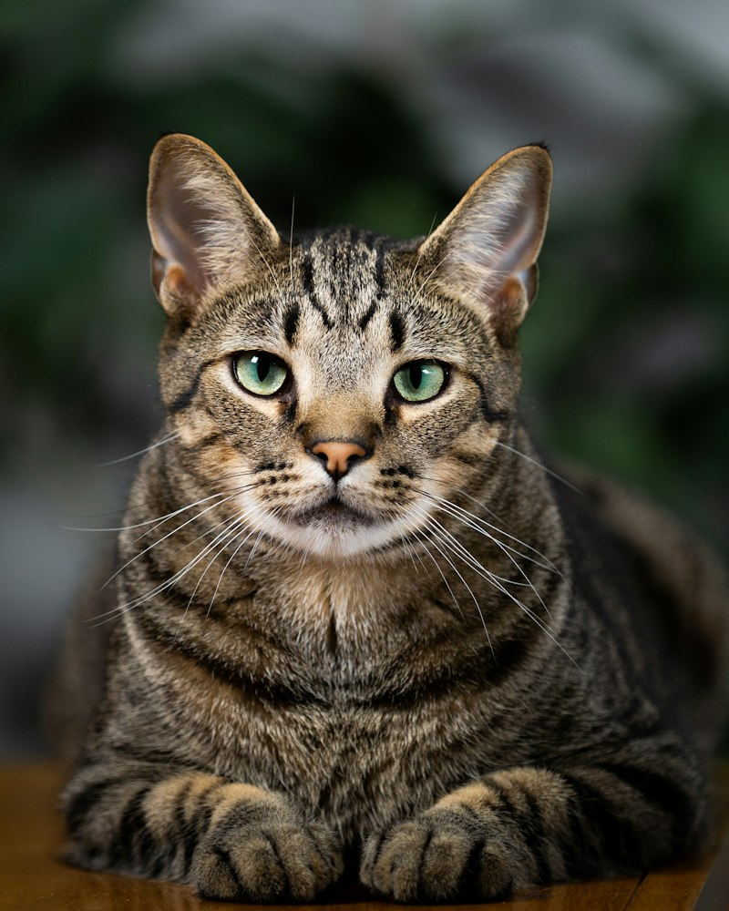

Thor
Idade: 3 anos. Porte: grande.
Brincalhão e companheiro, gosta de passeios e precisa de uma família com tempo para atividades diárias.
Como adotar o ThorONG Patinhas Felizes
Cuidado, carinho e uma nova chance.
Conheça as ações propostas para a ONG e as formas de participar.
Adotar é assumir um compromisso com alimentação, saúde, segurança e carinho durante toda a vida do animal.
No projeto, a adoção é organizada em três etapas:
Perfis fictícios para demonstrar a página de adoção. Fotos ilustrativas.

Idade: 3 anos. Porte: grande.
Brincalhão e companheiro, gosta de passeios e precisa de uma família com tempo para atividades diárias.
Como adotar o Thor
Idade: 2 anos. Porte: pequeno.
Curiosa e tranquila, gosta de companhia e procura um lar seguro, com janelas protegidas por telas.
Como adotar a LunaA campanha Patinhas Bem Cuidadas tem como objetivo reunir recursos para alimentação, higiene e atendimento veterinário.
O projeto prevê o recebimento de ração em embalagem fechada, cobertores limpos e materiais de higiene. A entrega deve ser combinada com a equipe.
Em uma ONG real, a equipe informaria um canal oficial para contribuir e apresentaria a prestação de contas dos valores recebidos e das despesas.
Como este é um projeto acadêmico, não há chave Pix, cobrança ou recebimento de dinheiro.
Consulte os contatos ilustrativosOs voluntários podem ajudar na organização das campanhas, na divulgação da adoção e nos cuidados diários, com orientação da equipe.
Para demonstrar seu interesse, preencha o formulário com sua área de atuação e disponibilidade. A integração e os horários seriam combinados com a equipe em um projeto real.
Acessar cadastro de voluntário